Likelihood!
NRES 746
September 18, 2016
In the last class, we talked about simulating data from models. This is often called forward modeling- that is, we take a model and use it to predict emergent patterns. The process flow goes something like this:
\(Model \rightarrow Data\)
In this class, we will talk about inference using the method of maximum likelihood. Inference is in some ways the opposite process (sometimes called inverse modeling). We are using the data to say something about the model.
\(Data \rightarrow Model\)
In many ways, these two processes – simulation and inference – are inter-related. Simulation can help us to make better inferences, and inference can help us to construct better simulation models!
Let’s see how simulation can help us to make inference. This leads directly into the core idea of maximum likelihood!
Using data simulation to make inferences
Let’s use the “mtcars” data for this example: (note: some code borrowed from here)
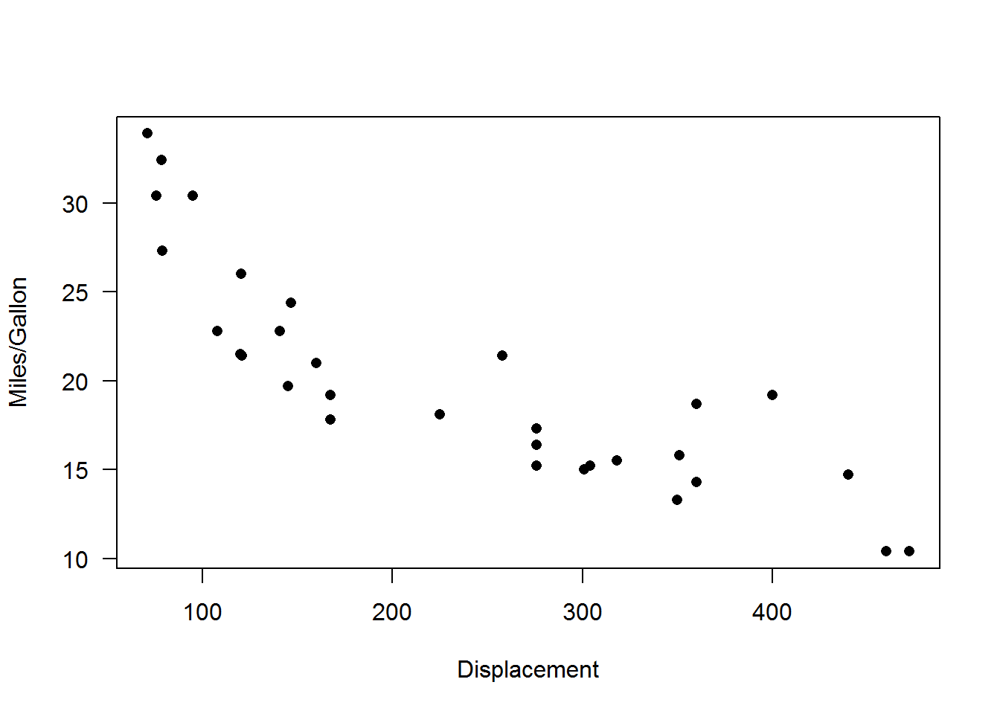
Looks nonlinear, with relatively constant variance across parameter space. So let’s see if we can build a model that could possibly produce these data!!
Since this looks a little like an exponential decline, let’s first build a function that can generate data that follows that deterministic function:
\(mpg = N\left \{ intercept\cdot e^{slope\cdot displacement} ,Variance\right \}\)
Or, if we package the parameters simply as params a, b, and c:
\(mpg = N\left \{ a\cdot e^{b\cdot displacement} ,c\right \}\)
Deterministic_component <- function(xvals,a,b){
yexp <- a*exp(b*xvals) # deterministic exponential decay
return(yexp)
}
DataGenerator_exp <- function(xvals,params){
yexp <- Deterministic_component(xvals,params$a,params$b) # get signal
yvals <- rnorm(length(yexp),yexp,sqrt(params$c)) # add noise
return(yvals)
}Let’s test this function to see if it does what we want:
xvals=mtcars$disp # xvals same as data (this is a "fixed effect", so there is no random component here- we can't really "sample" x values)
params <- list()
params$a=30
params$b=-0.005 # = 1/200
params$c=1
yvals <- DataGenerator_exp(xvals,params)
plot(yvals~xvals)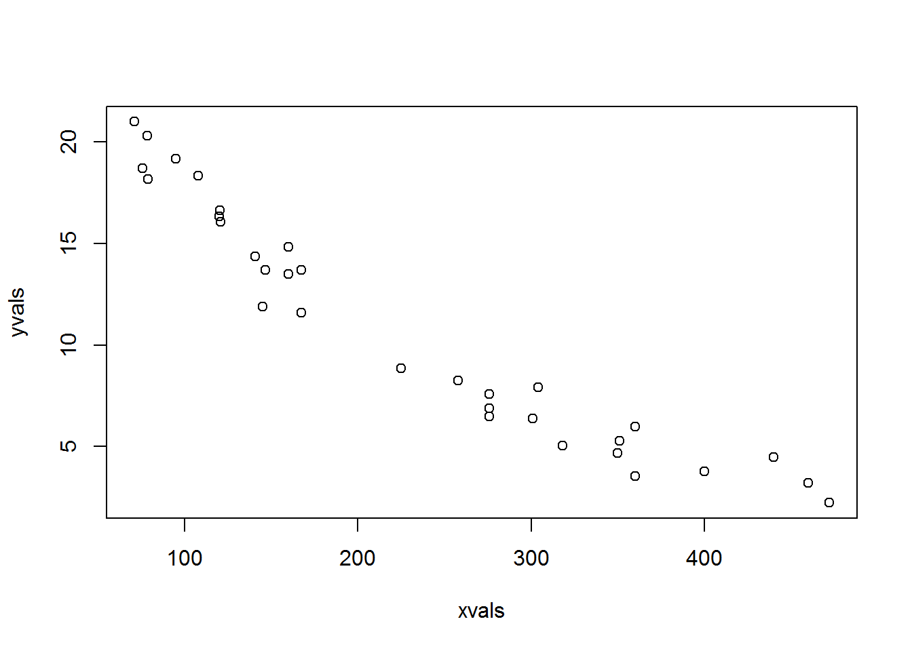
Okay, looks reasonable. Now, let’s write a function to generate multiple replicate datasets from a particular model and make boxplots describing the plausible data produced by the model across measured parameter space.
PlotRangeOfPlausibleData <- function(xvals,params,reps){
samplesize <- length(xvals)
results <- array(0,dim=c(samplesize,reps)) # storage array for results
for(i in 1:reps){
yvals <- DataGenerator_exp(xvals,params)
results[,i] <- yvals
}
# now make a boxplot of the results
boxplot(lapply(1:nrow(results), function(i) results[i,]),at=xvals, xaxt="n",main="Plausible data under this model",ylab="mpg",xlab="Displacement",boxwex=6)
cleanseq <- (seq(0,max(round(xvals/100)),length=(max(round(xvals/100)))+1))*100
axis(1,at=cleanseq,labels = cleanseq) # label the x axis properly
}Let’s try it out!
reps <- 1000 # number of replicate datasets to generate
PlotRangeOfPlausibleData(xvals,params,reps)
Now we can overlay the data and see how well we did!
real_yvals <- mtcars$mpg
PlotRangeOfPlausibleData(xvals,params,reps)
points(xvals,real_yvals,pch=20,cex=3,col="green")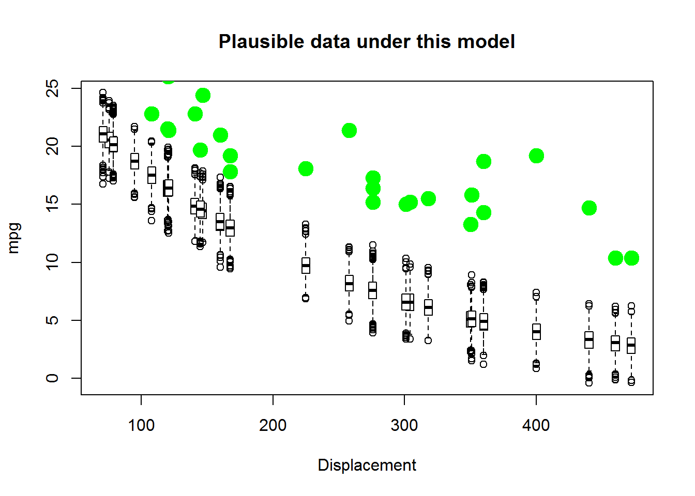
Okay, not very good yet. Let’s see if we can improve this by changing the parameters. Let’s increase the intercept and reduce the slope:
params$a=40 # was 30
params$b=-0.001 # was 0.005
PlotRangeOfPlausibleData(xvals,params,reps)
points(xvals,real_yvals,pch=20,cex=3,col="green") # overlay the real data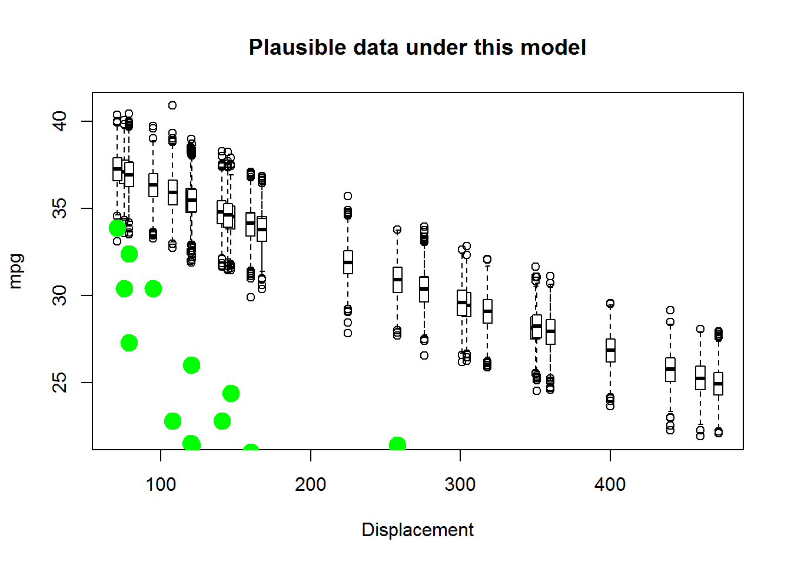
Oops- we overshot!! Let’s find something in the middle!
params$a=33 # was 40
params$b=-0.002 # was 0.001
PlotRangeOfPlausibleData(xvals,params,reps)
points(xvals,real_yvals,pch=20,cex=3,col="green") # overlay the real data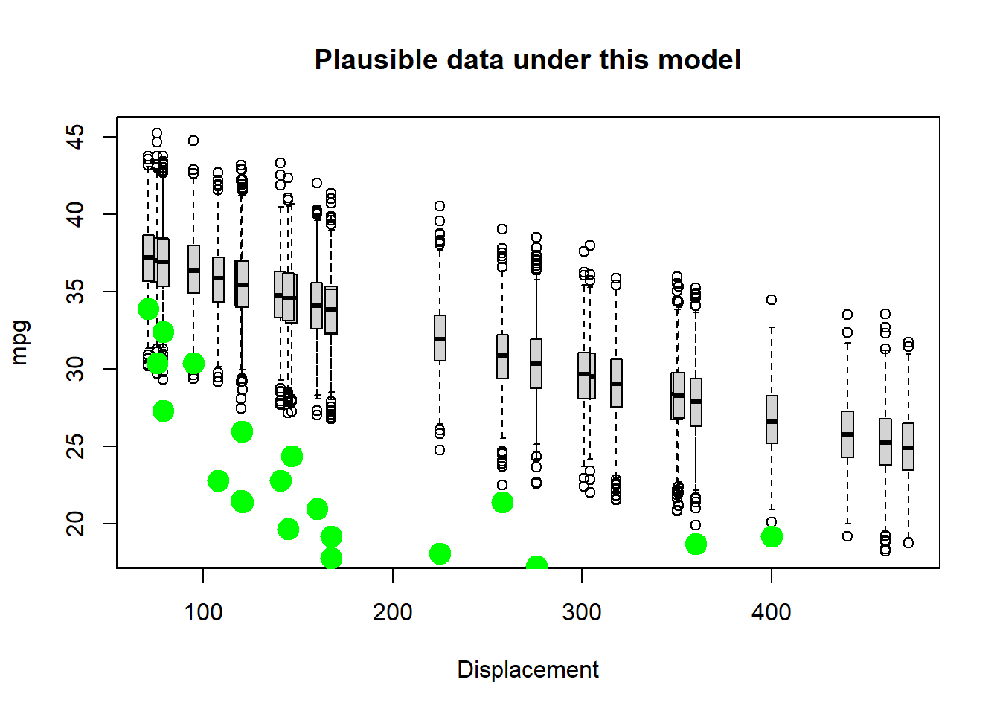
Much better! This model could plausibly generate most of these data!
So, we have used simulation, along with trial and error, to infer parameter values for our model!
Computing data likelihood
First of all, what does “data likelihood” really mean? Formally,
\(\mathcal{L} (Model|obs.data) \equiv Prob(obs.data|Model)\)
Definition, in plain English!
The likelihood of a set of parameters $$ given some observed data is equal to the probability of observing these data given those particular parameter values. In this way, likelihood is a quantitative measure of goodness-of-fit. Higher likelihoods correspond to a higher probability of the model producing the observed data.
Worked example
Let’s go through an example! For simplicity, let’s stick with the cars example for now.
For simplicity, let’s consider only the first observation:
obs.data <- mtcars[1,c("mpg","disp")]
obs.data## mpg disp
## Mazda RX4 21 160Remember, we are considering the following data generating model:
\(mpg = N\left \{ a\cdot e^{b\cdot displacement} ,c\right \}\)
Let’s assume for a second that the parameters we selected in our trial-and-error exercise above are the true parameters. What is the expected value of our observation under this data generating model.
############
# "best fit" parameters from above
############
params$a=33 # was 40
params$b=-0.002 # was 0.001
params$c=1
params## $a
## [1] 33
##
## $b
## [1] -0.002
##
## $c
## [1] 1expected_val <- Deterministic_component(obs.data$disp,params$a,params$b)
expected_val## [1] 23.96292Okay we now know our expected (mean) value for mpg for a car with displacement of 160 cubic inches. We also know the observed mpg for a car with a displacement of 160 cubic inches: it was 21 mpgs. Since the model also specifies the variance (1) we can compute the probability of observing a car with 21 mpgs under our model.
mean = expected_val # 23.96
stdev = sqrt(params$c)
curve(dnorm(x,mean,stdev),10,30,xlab="mpg",ylab="probability density") # probability density
abline(v=obs.data$mpg,col="red",lwd=2)
Now it is straightforward to compute the likelihood. We just need to know the probability density where the red line (observed data) intersects with the normal density curve above:
likelihood = dnorm(obs.data$mpg,mean,stdev)
likelihood## [1] 0.004949936Now let’s consider a second observation as well!
obs.data <- mtcars[c(1,3),c("mpg","disp")]
obs.data## mpg disp
## Mazda RX4 21.0 160
## Datsun 710 22.8 108par(mfrow=c(1,2)) # set up graphics!
for(i in 1:nrow(obs.data)){
curve(dnorm(x,Deterministic_component(obs.data$disp[i],params$a,params$b),sqrt(params$c)),10,30,xlab="mpg",ylab="probability density") # probability density
abline(v=obs.data$mpg[i],col="red",lwd=2)
}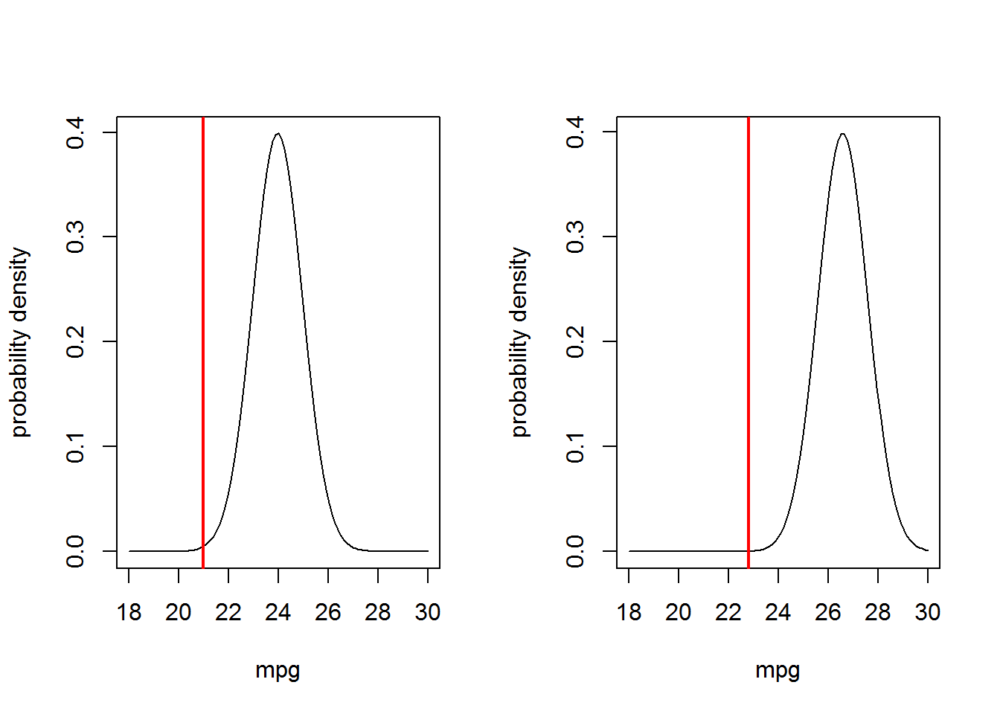
What is the likelihood of observing both of these data points???
\(Prob(obs.data_{1}|Model])\cdot Prob(obs.data_{2}|Model])\)
Likelihood <- dnorm(obs.data$mpg[1],Deterministic_component(obs.data$disp[1],params$a,params$b),sqrt(params$c)) *
dnorm(obs.data$mpg[2],Deterministic_component(obs.data$disp[2],params$a,params$b),sqrt(params$c))
Likelihood## [1] 1.505202e-06Let’s consider four observations:
obs.data <- mtcars[c(1,3,4,5),c("mpg","disp")]
obs.data## mpg disp
## Mazda RX4 21.0 160
## Datsun 710 22.8 108
## Hornet 4 Drive 21.4 258
## Hornet Sportabout 18.7 360par(mfrow=c(2,2)) # set up graphics!
for(i in 1:nrow(obs.data)){
curve(dnorm(x,Deterministic_component(obs.data$disp[i],params$a,params$b),sqrt(params$c)),10,30,xlab="mpg",ylab="probability density") # probability density
abline(v=obs.data$mpg[i],col="red",lwd=2)
}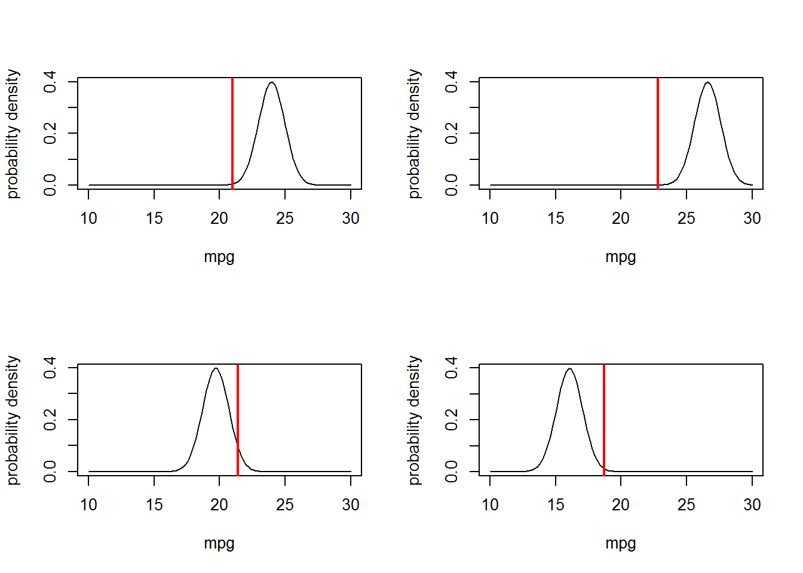
What is the combined likelihood of all of these four data points, assuming each observation is independent…
Likelihood <- 1 # initialize the likelihood
for(i in 1:nrow(obs.data)){
Likelihood <- Likelihood * dnorm(obs.data$mpg[i],Deterministic_component(obs.data$disp[i],params$a,params$b),sqrt(params$c))
}
Likelihood## [1] 1.738001e-09Alternatively, we can use the “prod” function in R:
Likelihood <- prod(dnorm(obs.data$mpg,Deterministic_component(obs.data$disp,params$a,params$b),sqrt(params$c)))
Likelihood## [1] 1.738001e-09Okay, so it should be fairly obvious how we might get the likelihood of the entire dataset. Assuming independence of observations of course!
full.data <- mtcars[,c("mpg","disp")]
Likelihood <- prod(dnorm(full.data$mpg,Deterministic_component(full.data$disp,params$a,params$b),sqrt(params$c)))
Likelihood## [1] 4.654279e-84You may notice that that’s a pretty small number. When you multiply lots of really small numbers together, we get much smaller numbers. This can be very undesirable, especially when you run into computational errors (e.g., arithmetic overflow). For this reason, and because we generally like sums rather than products, we generally log-transform likelihoods. As you recall,
\(log(a\cdot b\cdot c)=log(a)+log(b)+log(c)\)
Log transformations just make it easier to work with likelihoods!
In fact, the probability distribution functions in R make it extra easy for us to work with log likelihoods, using the ‘log=TRUE’ option!
Log.Likelihood <- sum(dnorm(full.data$mpg,Deterministic_component(full.data$disp,params$a,params$b),sqrt(params$c),log=TRUE))
Log.Likelihood ## [1] -191.8794exp(Log.Likelihood) # we can convert back to likelihood if we want...## [1] 4.654279e-84Maximum Likelihood Estimation (MLE)
Maximum likelihood estimation is a general, flexible and generally robust method for drawing inference about models from data.
The basic idea is simple: given a data generating model, search for the set of parameters that maximizes the data likelihood!
The steps of a typical MLE analysis are as follows:
- Build a likelihood function
- Use numerical optimization algorithms to find the parameters that maximize the likelihood function
- Use the shape of the likelihood function to make inference about parameter uncertainty (e.g., confidence intervals)
Okay, so what is a likelihood function? We basically already have this for the cars example: it is just a function that produces a joint likelhood value, given (1) a dataset and (2) a data generating function.
LogLikFunction <- function(params,df,yvar,xvar){
LogLik <- sum(dnorm(df[,yvar],Deterministic_component(df[,xvar],params['a'],params['b']),sqrt(params['c']),log=TRUE))
return(LogLik)
}
LogLikFunction(unlist(params),df=mtcars,yvar="mpg",xvar="disp")## [1] -191.8794Now that we have a likelihood function, we need to search parameter space for the parameter set that maximizes the log likelhood. Luckily, there are lots of computational algorithms that can do this. We will look at this in detail in the next lecture. For now, we just need to know that they exist, and that they can be harnessed using the ‘optim’ function in R.
Let’s find the MLE for the three parameters in the cars example!!
MLE <- optim(fn=LogLikFunction,par=unlist(params),df=mtcars,yvar="mpg",xvar="disp",control=list(fnscale=-1)) # note, the control param is set so that "optim" maximizes rather than minimizes the Log-likelihood. Now, we can get the MLEs for the three parameters:
MLE$par## a b c
## 33.077114768 -0.002338554 8.166392492We can also get the log likelihood for the best model
MLE$value## [1] -79.0089Let’s look at goodness-of-fit for the best model!
bestParams <- as.list(MLE$par)
xvals=mtcars$disp
yvals <- mtcars$mpg
PlotRangeOfPlausibleData(xvals,bestParams,1000)
points(xvals,yvals,pch=20,cex=3,col="green")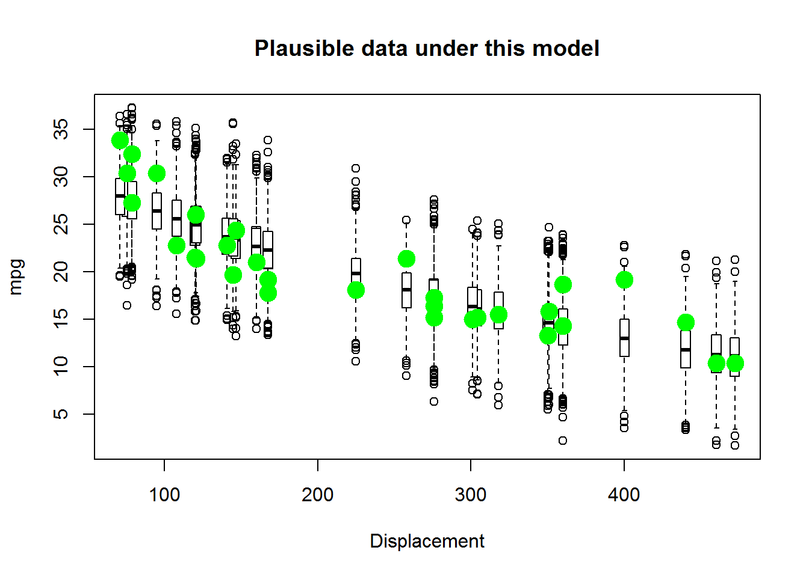
Now this isn’t such a bad looking model!
Using this same strategy, we can fit countless models to data. We just performed a standard non-linear regression. But we could just as well have fit any number of alternative model formulations. Maximum Likelihood is a powerful and flexible framework. We will have plenty of more opportunities to play with likeihood-based frameworks, both in a frequentist and a Bayesian context.
Aside: generating initial values
Note that the ‘optim’ function requires specification of initial values for every free parameter in your model. In general, it is not critical that the initial values fit the data very well. However, we need to put serious thought into our initial values. Using values that are too far away from the best-fit parameter estimates can cause our optimization algorithms to fail! The strategy I recommend for setting initial values is:
- If possible, use general understanding of the meaning of the parameters to “eyeball” an approximate value for each parameter
- Write a data-generation function (sometimes just the deterministic component might be enough) and plot out this function against the observed data. If the fit is “close-ish” then you should be able to use these values for your initial values. If not, tweak the parameters until you find something that is “close-ish”.
Estimating parameter uncertainty
We have now identified the parameter values that maximize the likelihood function. This is now our “best” estimate of the parameter value. But we usually want to know something about how certain we are about our estimate, often in the form of confidence intervals.
Fortunately, likelihood theory offers us a strategy for estimating confidence intervals around our parameter estimates. The idea is that the shape of the likelihood function tells us something about the range of parameter values under which the true parameter value may potentially fall.
For instance, let’s plot out the shape of the likelihood function across a slice of parameter space. In this case, let’s look at the “decay rate” term (the ‘b’ parameter). We can vary that parameter over a range of possible values and see how the likelihood changes over that parameter space. Let’s hold the other parameters at their maximum likelihood values:
upperval <- -1/1000
lowerval <- -1/200
allvals <- seq(lowerval,upperval,length=1000)
likelihood_slice <- numeric(1000) # set up storage vector!
newParams <- bestParams
for(i in c(1:length(allvals))){
newParams$b <- allvals[i]
likelihood_slice[i] <- exp(LogLikFunction(unlist(newParams),mtcars,"mpg","disp")) # get the data likelihood across slice of parameter space
}
plot(allvals,likelihood_slice,type="l",main="Likelihood Slice",xlab="Parameter Slice for \'b\'",ylab="Likelihood")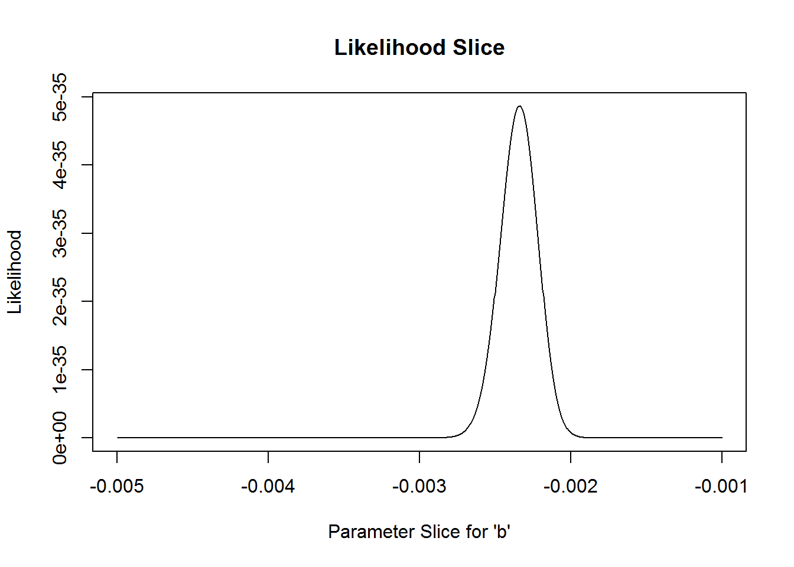
Again, we generally want to work with log-likelihoods. And here we have an even better reason to use log-likelihoods. This reason: the “rule of 2”, and (more formally) the likelihood ratio test.
For now, suffice it to say that all parameter values within 2 log-likelihood units of the best-fit parameter value are plausible. Therefore, a reasonable confidence interval (approximate 95% conf int) can be obtained by idenfifying the range of parameter values for which the log-likelihood is within two of the maximum likelihood…
Let’s plot out the log-likelihood slice:
upperval <- -1/1000
lowerval <- -1/200
allvals <- seq(lowerval,upperval,length=1000)
loglikelihood_slice <- numeric(1000) # set up storage vector!
newParams <- bestParams
for(i in c(1:length(allvals))){
newParams$b <- allvals[i]
loglikelihood_slice[i] <- LogLikFunction(unlist(newParams),mtcars,"mpg","disp") # get the data likelihood across slice of parameter space
}
plot(allvals,loglikelihood_slice,type="l",main="Log Likelihood Slice",xlab="Parameter Slice for \'b\'",ylab="Log-Likelihood")Let’s “zoom in” to a smaller slice of parameter space so we can more clearly see the “plausible” values:
upperval <- -1/550
lowerval <- -1/350
allvals <- seq(lowerval,upperval,length=1000)
loglikelihood_slice <- numeric(1000) # set up storage vector!
newParams <- bestParams
for(i in c(1:length(allvals))){
newParams$b <- allvals[i]
loglikelihood_slice[i] <- LogLikFunction(unlist(newParams),mtcars,"mpg","disp") # get the data likelihood across slice of parameter space
}
plot(allvals,loglikelihood_slice,type="l",main="Log Likelihood Slice",xlab="Parameter Slice for \'b\'",ylab="Log-Likelihood")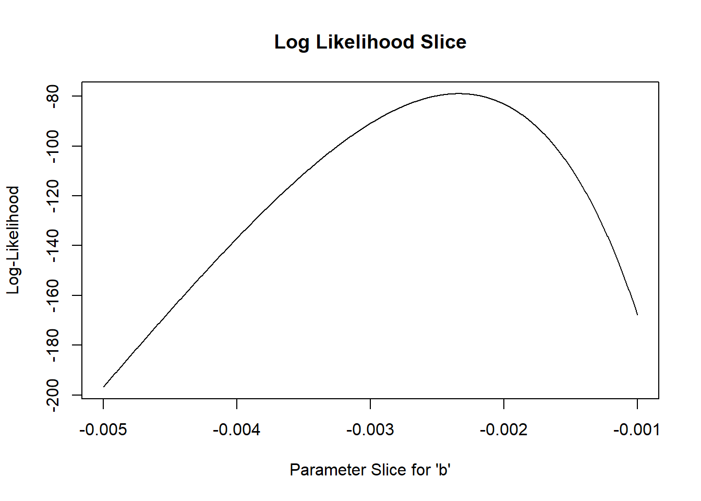
What region of this space falls within 2 log likelihood units of the best value?
bestVal <- bestParams$b
bestVal## [1] -0.002338554plot(allvals,loglikelihood_slice,type="l",main="Log Likelihood Slice",xlab="Parameter Slice for \'b\'",ylab="Log-Likelihood")
abline(v=bestVal,lwd=3,col="blue")
abline(h=(MLE$value-2))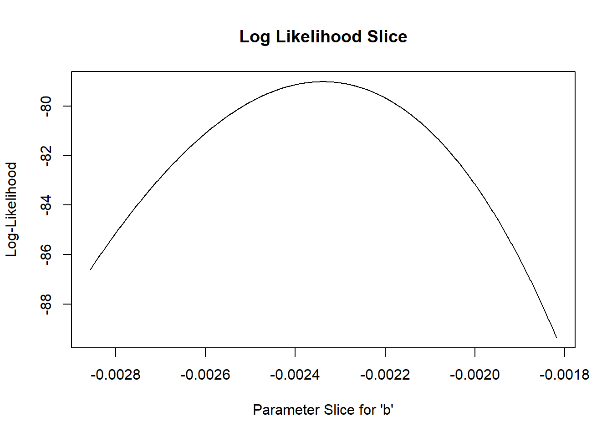
So what is our 95% confidence interval in this case?? (remember this is very approximate!)
reasonable_parameter_values <- allvals[loglikelihood_slice>=(MLE$value-2)]
min(reasonable_parameter_values)## [1] -0.002595063max(reasonable_parameter_values)## [1] -0.002100022plot(allvals,loglikelihood_slice,type="l",main="Log Likelihood slice",xlab="Parameter Slice for \'b\'",ylab="Log-Likelihood")
abline(v=bestVal,lwd=3,col="blue")
abline(h=(MLE$value-2),lty=2)
abline(v=min(reasonable_parameter_values),lwd=1,col="blue")
abline(v=max(reasonable_parameter_values),lwd=1,col="blue")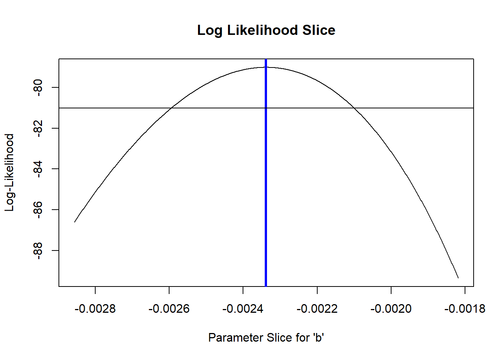
Key point!
From the Bolker book:
- The geometry of the likelihood surface – where it peaks and how the distribution falls off around the peak – contains essentially all the information you need to estimate parameters and confidence intervals.
Estimating parameter uncertainty in multiple dimensions: the Likelihood Profile
If we have more than one free parameter in our model, it seems strange to fix any parameter at a particular value, as we did in computing the “likelihood slice” above. It makes more sense to allow all the parameters to vary. For the purpose of visualization, let’s assume for now that we only have two free parameters in our model: ‘a’ and ‘b’. We will assume for now that the variance parameter is known for certain.
Let’s try to visualize the likelihood surface in two dimensions!
upperval_b <- -1/800
lowerval_b <- -1/300
upperval_a <- 50
lowerval_a <- 5
allvals_a <- seq(lowerval_a,upperval_a,length=500)
allvals_b <- seq(lowerval_b,upperval_b,length=500)
loglikelihood_surface <- matrix(0,nrow=500,ncol=500) # set up storage matrix!
newParams <- bestParams
for(i in 1:length(allvals_a)){ # loop through possible a params
newParams$a <- allvals_a[i]
for(j in 1:length(allvals_b)){ # loop through possible b params
newParams$b <- allvals_b[j]
loglikelihood_surface[i,j] <- LogLikFunction(unlist(newParams),mtcars,"mpg","disp") # get the data likelihood across slice of parameter space
}
}
image(x=allvals_b,y=allvals_a,z=loglikelihood_surface,zlim=c(-100,-75),col=topo.colors(12))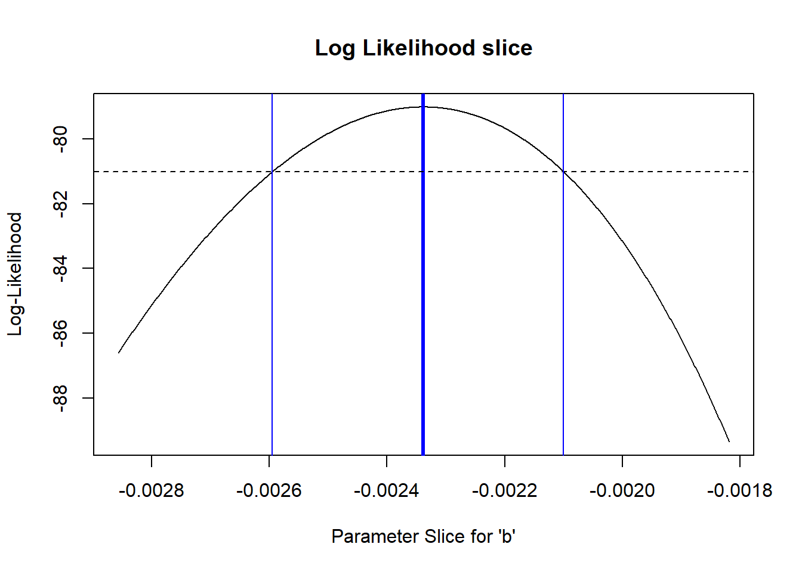
Now let’s add a contour line to indicate the 95% bivariate confidence region
conf95 <- qchisq(0.95,2)/2
image(x=allvals_a,y=allvals_b,z=loglikelihood_surface,zlim=c(-100,-75),col=topo.colors(12))
contour(x=allvals_a,y=allvals_b,z=loglikelihood_surface,levels=(MLE$value-conf95),add=TRUE,lwd=3,col=gray(0.3))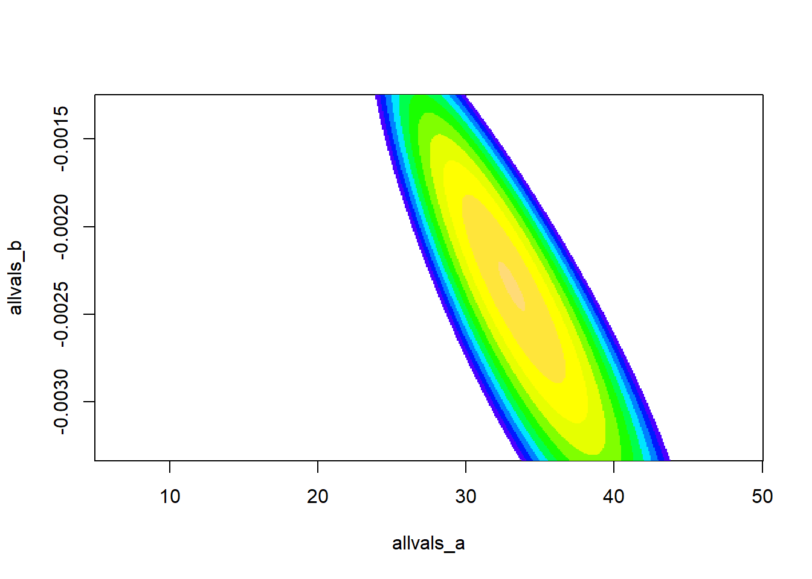
So, what is the “profile likelihood” confidence interval for the a parameter?
By “profile likelihood” confidence interval, we mean this: we have a parameter of interest, and “nuisance parameter(s)”. For every value of the parameter of interest, we find the highest likelihood value across all possible values of all the other parameters.
### A parameter
profile_A <- apply(loglikelihood_surface,1,max)
reasonable_parameter_values_A <- allvals_a[profile_A >=(MLE$value-conf95)]
min(reasonable_parameter_values_A)## [1] 29.25852max(reasonable_parameter_values_A)## [1] 37.28457plot(allvals_a,profile_A,type="l",main="Log Likelihood profile",xlab="Parameter Slice for \'a\'",ylab="Log-Likelihood")
abline(v=MLE$par["a"],lwd=3,col="blue")
abline(v=min(reasonable_parameter_values_A),lwd=1,col="blue")
abline(v=max(reasonable_parameter_values_A),lwd=1,col="blue")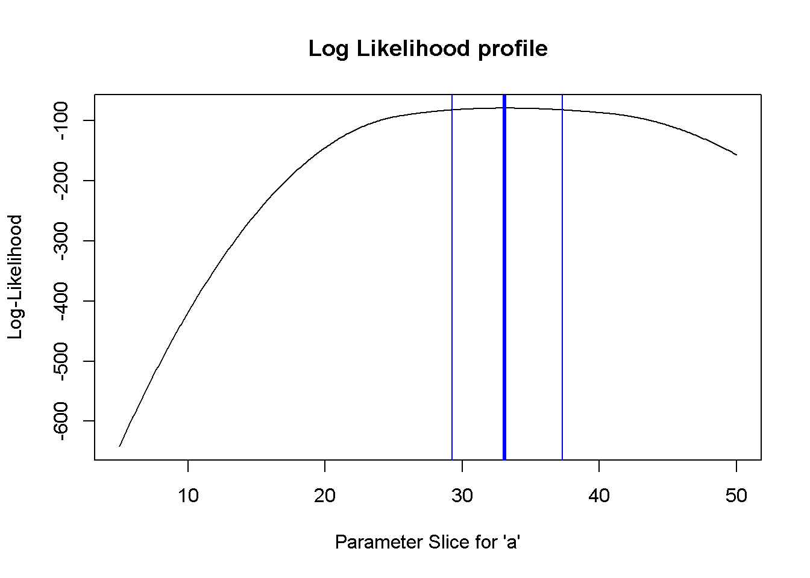
And the b parameter?
profile_B <- apply(loglikelihood_surface,2,max)
reasonable_parameter_values_B <- allvals_b[profile_B >=(MLE$value-conf95)]
min(reasonable_parameter_values_B)## [1] -0.002982632max(reasonable_parameter_values_B)## [1] -0.001742652plot(allvals_b,profile_B,type="l",main="Log Likelihood profile",xlab="Parameter Slice for \'b\'",ylab="Log-Likelihood")
abline(v=MLE$par["b"],lwd=3,col="blue")
abline(v=min(reasonable_parameter_values_B),lwd=1,col="blue")
abline(v=max(reasonable_parameter_values_B),lwd=1,col="blue")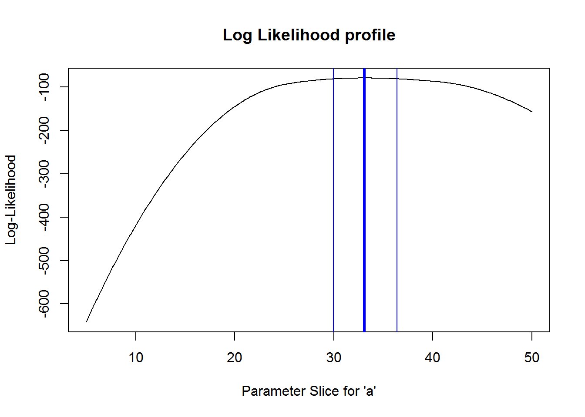
So,what happens if we compare the profile likelihood confidence interval with the “slice” method we used earlier??
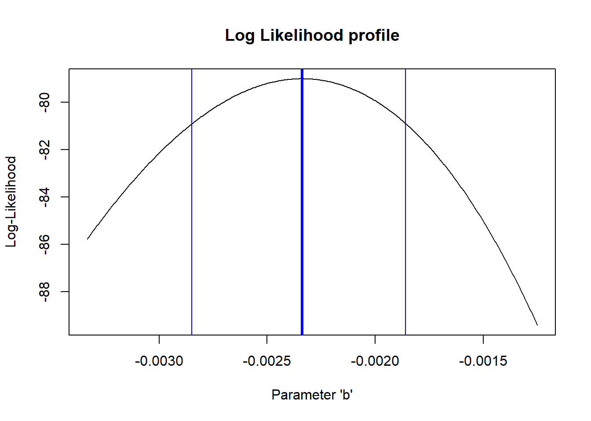
Why is there a difference??
In R and other software packages you may have worked with, you will have the option to estimate the confidence interval using the ‘profile likelihood’ method. Now you know what that means!
Short exercise 1
Develop a function that returns the data likelihood (likelihood function) for the following scenario: you visit three known-occupied wetland sites ten times and for each site you record the number of times a particular frog species is detected within a 5 minute period. Assuming that all sites are occupied continously, compute the likelihood of these data: [3,2 and 6 detections for sites 1, 2, and 3 respectively] for a given detection probability \(p\). Assume that all sites have the same (unknown) detection probability. Using this likelihood function, answer the following questions:
- What is the maximum likelihood estimate for the p parameter?
- Using the “rule of 2”, determine the approximate 95% confidence interval for the p parameter.
The likelihood ratio test (LRT)
Q: In what ways is the likelihood surface likely to change if you were to collect more data?
Steeper gradients (slopes) in the likelihood surface near the maximum likelihood estimate correspond to narrower confidence intervals. But how can we determine the cutoff for where the edge of the confidence interval is?
Definition: Likelihood Ratio
The likelihood Ratio is defined as:
\(\frac{\mathcal{L} _{r}}{\widehat{\mathcal{L}}}\)
Where $\widehat{ $ is the likelihood at the global maximum likelihood estimate and \(\mathcal{L} _{r}\) is the Likelihood of a model for which some parameters have been “fixed” (determined a priori and therefore no longer “free” to be estimated.
Definition: Deviance
Twice the negative log of the likelihood ratio, \(-2*ln(\frac{\mathcal{L} _{r}}{\widehat{\mathcal{L}}})\), is also known as the deviance!
Distribution of the Likelihood Ratio (frequentist!)
For some reason (which we will not dwell on) the deviance under the null hypothesis (the full model adds no useful information with respect to the restricted model) is approximately $^2 $ (“chi-squared”) distributed with r degrees of freedom, where r is the number of dimensions by which the full model has been reduced.
r is equal to the number of free parameters that have been eliminated with respect to the full model. That is, if our full model has three free parameters and we fix the value of two of these parameters, r is equal to 2.
We can use this to estimate the statistical significance of any difference in likelihood between a full model and a restricted model.
Here is a visualization of the chi-squared distribution with 2 degrees of freedom:
curve(dchisq(x,2),0,10,ylab="probability density",xlab="x", main="Chi-Squared distribution, df=2")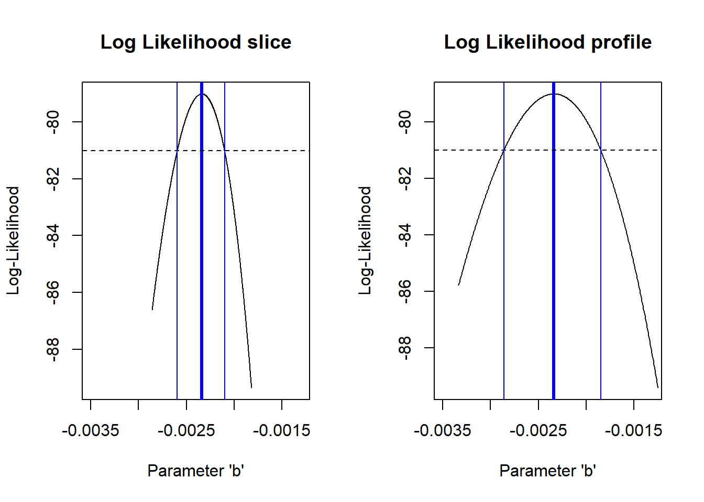
What is the 95% quantile of this distribution?
curve(dchisq(x,2),0,10,ylab="probability density",xlab="x", main="Chi-Squared distribution, df=2")
abline(v=qchisq(0.95,2),col="red",lwd=2)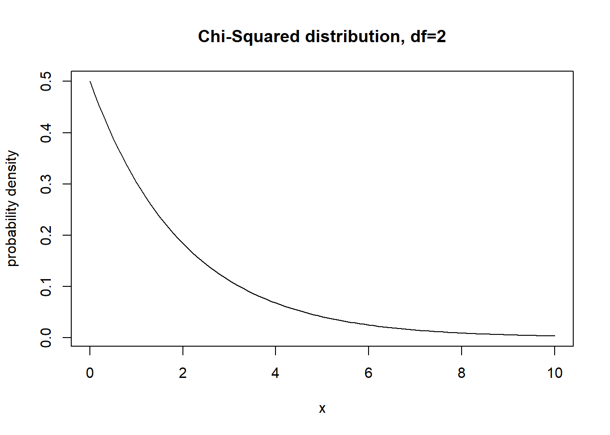
What about 1 df?
curve(dchisq(x,1),0,5,ylab="probability density",xlab="x", main="Chi-Squared distribution, df=1")
abline(v=qchisq(0.95,1),col="red",lwd=2)Okay, so now we know that the deviance, the quantity defined as \(-2*ln(\frac{\mathcal{L} _{r}}{\widehat{\mathcal{L}}})\), should be distributed according to the above probability distribution under the null hypothesis of no difference between the restricted and full model. How does this relate to confidence intervals?
Remember this is a frequentist test. So we are imagining multiple alternative universes where we are collecting data and determining a maximum likelihood estimate. Even though the data generating process is the same each time, each dataset we collect will yield a slightly different MLE. Now imagine we fix the value of one of our parameters at the true parameter value and collect thousands of datasets, each time maximizing the likelihood with respect to all the other parameters. The deviance between the restricted model and the full model should be chi-squared distributed!
That is, 95% of the time, the deviance should be below 3.84
So, if we want to determine a range in parameter space can plausibly contain the true parameter value, we can select the range of parameter space for which the deviance is less than or equal to 3.84.
$ Deviance - 3.84$
\(-2*ln(\frac{\mathcal{L} _{r}}{\widehat{\mathcal{L}}}) \leq - 3.84\)
\(-2*[ln(\mathcal{L} _{r}) - ln{\widehat{\mathcal{L}}})] \leq - 3.84\)
\([ln(\mathcal{L} _{r}) - ln{\widehat{\mathcal{L}}})] \leq 1.92\)
So, now what do you think about the “rule of 2”? Is it close enough???